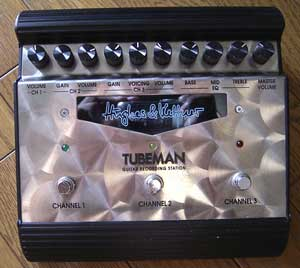

|
Hughes&Kettner TUBEMAN
|
||||
| パネルの光らない中期のTUBEMANです。真空管一本内臓で一応プリアンプの部類に属す。クリーン、クランチ、ドライブの3チャンネル使用で結構使えます。イコライザが各チャンネル共通なのが少々残念。
Send Returnにつないで使用、宅録の際はMixerOutがあるのでそちらを使用、店員いわく真空管が少々弱ってるそうで少々ノイズがのるので交換を検討中。 クリーンはすぐ歪む、、クランチは自分好みな音がします。ドライブは真空管らしい暖かい感じ、ハイゲインではないです。 ※クリーン→クランチ→ドライブで使用ギターはARのそれぞれリア→フロントでとってます。サーというノイズは真空管でブチッっというのいずはARのトグルスイッチが接触不良のためです。 かなり適当に弾いてます。あとでちゃんとしたサンプルになります。一発録りです。 |
||||
|  | ||||